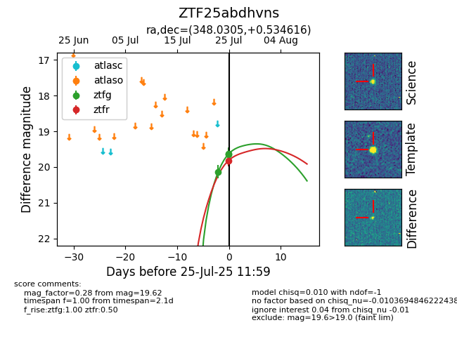

Target ZTF25abdhvns at 2025-07-25 11:59, see:
FINK: fink-portal.org/ZTF25abdhvns
Lasair: lasair-ztf.lsst.ac.uk/objects/ZTF25abdhvns
ALeRCE: alerce.online/object/ZTF25abdhvns
alt names
ZTF25abdhvns (ztf,fink)
coordinates:
equatorial (ra, dec) = (348.0305,+0.53462)
galactic (l, b) = (78.0835,-53.45911)
photometry
last ztfg=19.62, ztfr=19.82
3 ztfg, 1 ztfr detections
